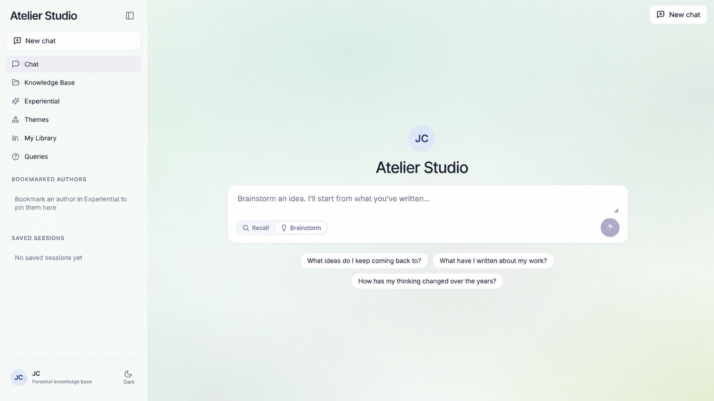
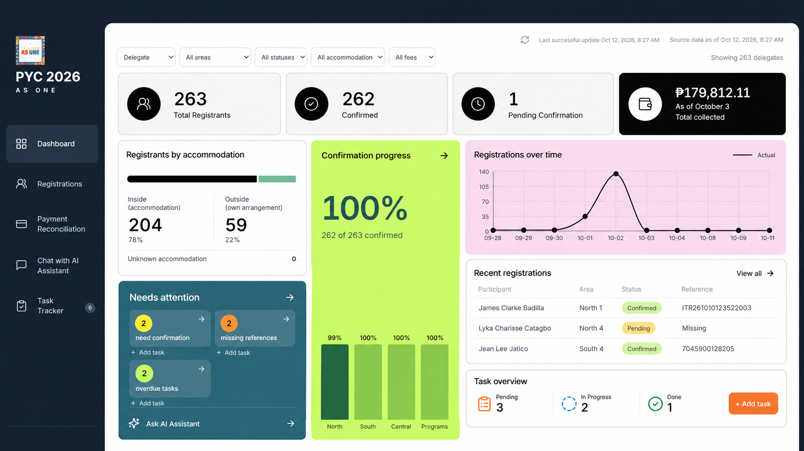
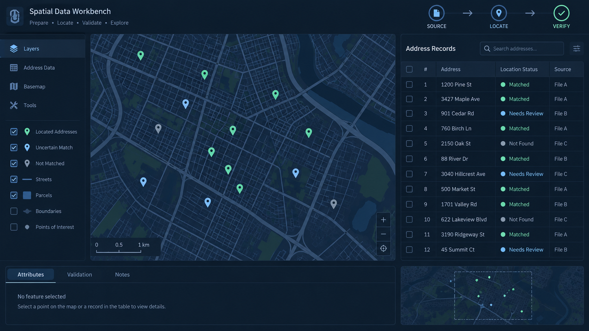
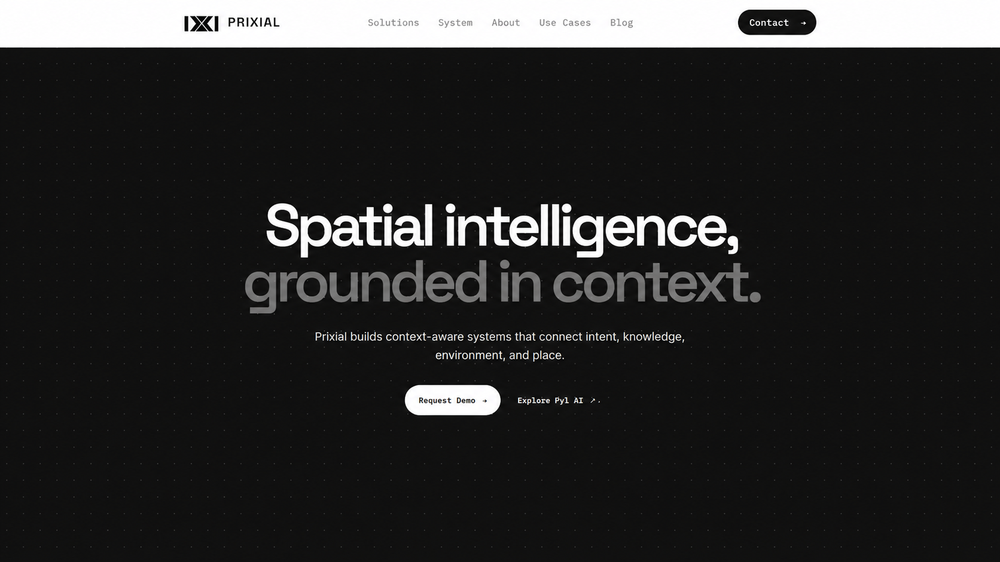
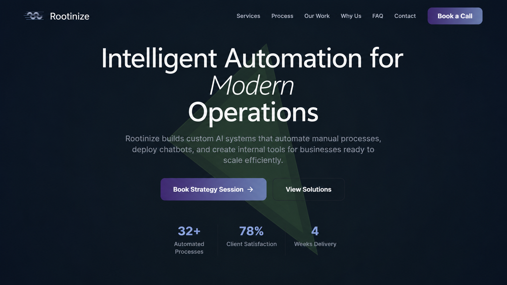

AI RAG Project Manager · Reputech
Coordinate RAG knowledge-system projects, translating business requirements into ingestion, metadata, and answer-quality workflows.
I connect careful human judgment with practical automation to make data and systems more reliable.
Human judgment. Connected systems.
My work lives where data quality, AI evaluation, and operations meet. I review ambiguous information, identify risk patterns, and build workflows that make repetitive work easier to manage.
My background spans regulatory annotation, Japanese content moderation, phishing review, and geospatial data research. I combine judgment-driven review with practical automation, API integrations, and self-hosted tools.
Recently, I’ve been working as an AI RAG Project Manager, focusing on spatial data, RAG quality, metadata enrichment, and place-based knowledge.
Coordinate RAG knowledge-system projects, translating business requirements into ingestion, metadata, and answer-quality workflows.
Researched and validated geospatial datasets, organized location information, and supported address accuracy.
Reviewed websites and domains, checked AI-assisted classifications, and supported filtering and threat intelligence datasets.
Reviewed AI outputs for accuracy and quality across evaluation projects.
Classified dApp websites and phishing or scam patterns for blockchain security workflows.
Annotated regulatory documents and validated datasets for compliance-related machine learning.
Reviewed Japanese content, supported fraud checks, and collaborated with quality assurance teams.

Exploring source-grounded answers, ingestion quality, and metadata enrichment for useful knowledge systems.
Working on evaluation criteria and understanding how ingestion and metadata affect answer quality. This is an exploration rather than a finished product.

Designed a centralized dashboard for registration tracking, payment reconciliation, confirmations, and operational follow-up.
Built and organized a practical operations view for monitoring registrants, confirmations, payments, references, and follow-up tasks.

Researching and validating location datasets, organizing addresses, and supporting reliable geospatial information.
Researched and validated mapping data, processed address information, and used spreadsheets and mapping tools to organize datasets.

A context-aware spatial intelligence platform connecting intent, knowledge, environment, and place.
Shown as a standalone spatial data project, separate from the selected work above.

An affiliated agency for practical automation, data workflows, and AI-enabled systems.
For AI data operations, evaluation, workflow automation, or spatial data collaboration.
Start a conversation ↗